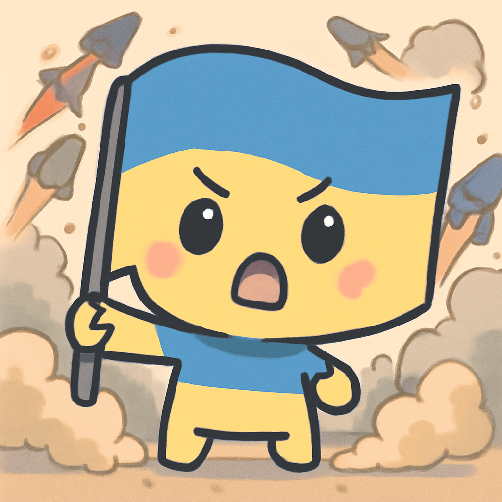
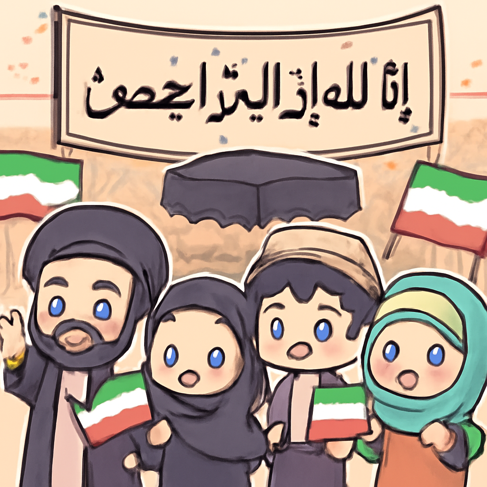

其一 · 烏克蘭基輔 · 烏克蘭面臨導彈短缺危機
基輔遭到俄羅斯重大攻擊，23人遇難。
在烏克蘭基輔，週日遭到了一次大規模的俄羅斯導彈攻擊，總共發射了68枚導彈和351架無人機，造成23人喪生。烏克蘭總統澤倫斯基警告，這次攻擊讓他們的攔截導彈儲備面臨短缺的危機。這不僅是戰爭的悲劇，還可能影響到未來的防禦能力。希望這不是一場馬拉松式的長期對抗！
🔗 原始新聞 ↗
2026-07-07 · 以古觀今，以笑抗愁
基輔遭到俄羅斯重大攻擊，23人遇難。
在烏克蘭基輔，週日遭到了一次大規模的俄羅斯導彈攻擊，總共發射了68枚導彈和351架無人機，造成23人喪生。烏克蘭總統澤倫斯基警告，這次攻擊讓他們的攔截導彈儲備面臨短缺的危機。這不僅是戰爭的悲劇，還可能影響到未來的防禦能力。希望這不是一場馬拉松式的長期對抗！
🔗 原始新聞 ↗
基輔遭到俄羅斯第二次大規模攻擊，造成16人死傷。

在俄羅斯對烏克蘭基輔的第二次大規模攻擊中，當地官員報導至少16人喪生。這場攻擊發生在北約峰會前夕，讓國際局勢更加緊張。烏克蘭的抗戰精神依然堅韌，但面對這樣的挑戰，未來局勢如何發展，令人擔憂。希望他們能找到和平的曙光，而不是一味地進入黑暗時期。
🔗 原始新聞 ↗
中國在太平洋試射潛射導彈，國際關注升高。
中國最近在太平洋地區進行了一次潛射導彈試射，這讓周邊國家都緊張兮兮的，尤其是澳大利亞趕忙加強與太平洋島國的防禦合作。這種火藥味越來越濃，讓人不禁想問：到底是誰在打什麼小算盤？希望大家能夠冷靜點，別讓火藥味燒到自家！
🔗 原始新聞 ↗
斯里蘭卡監獄騷亂最嚴重，26人喪生。
斯里蘭卡的Negombo監獄發生了兩天的暴力騷亂，造成26人死亡，超過100人受傷。這是當地近年來最嚴重的監獄騷亂，暴露出監獄過於擁擠、缺乏人道待遇的問題。真是讓人心痛，這些人不是犯人，而是社會的受害者。希望有一天，監獄能成為真正的改過自新之地，而不是暴力的溫床。
🔗 原始新聞 ↗
德黑蘭舉行哈梅內伊葬禮，民眾情緒高漲。

伊朗的前最高領袖哈梅內伊的葬禮在德黑蘭舉行，吸引了大批民眾前來送行，大家揮舞伊朗國旗和紅色復仇旗幟，情緒激昂。這不僅是對一位領導人的告別，也是對未來的展望。人們希望能從中獲得一些希望，而不是僅僅是惋惜過去。希望這場葬禮能成為新開始的象徵，而不是絕望的延續。
🔗 原始新聞 ↗